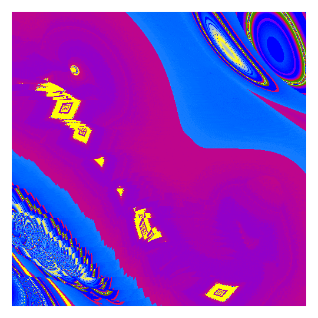
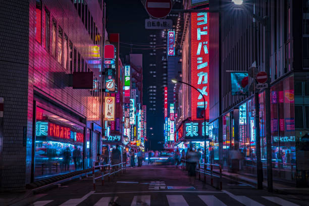

Bars, pubs, casual izakaya to Michelin-starred cuisine, nightclubs for every taste
(from tiny to giant,from house and techno to hip-hop),
live music of every genre (jazz, rock, blues, punk),
and special events every night of the year.
There’s always a great party going on in Tokyo.


東京, Tōkyō [toːkʲoː] , officially the Tokyo Metropolis (Japanese: 東京都, Tōkyō-to), is the capital and most populous prefecture of Japan. Located at the head of Tokyo Bay, the prefecture forms part of the Kantō region on the central Pacific coast of Japan's main island of Honshu.
"Kenshi Yonezu (米津 玄師, Yonezu Kenshi) is a Japanese musician, singer-songwriter, record producer and illustrator who began releasing Vocaloid music under the stage name Hachi (ハチ) in 2009. In 2012 he debuted under his real name, releasing music with his own voice. He sold 4.2 million physical copies and more than 7 million digital copies in Japan."